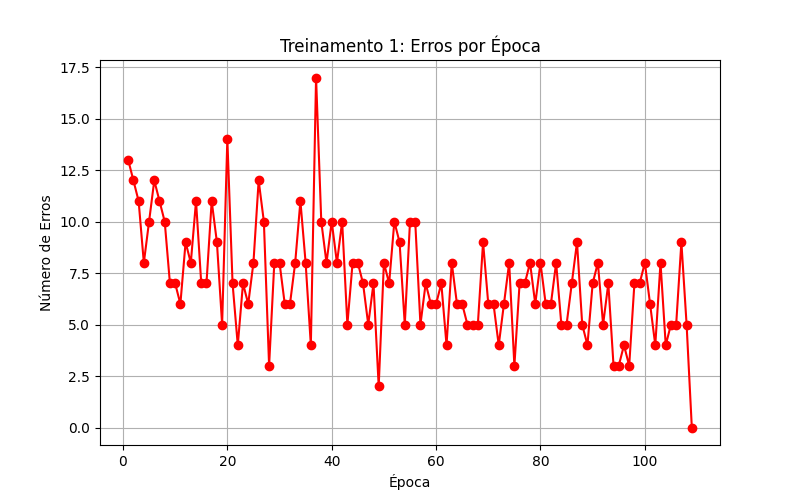
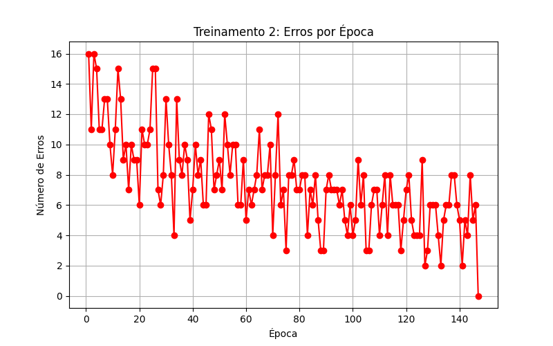
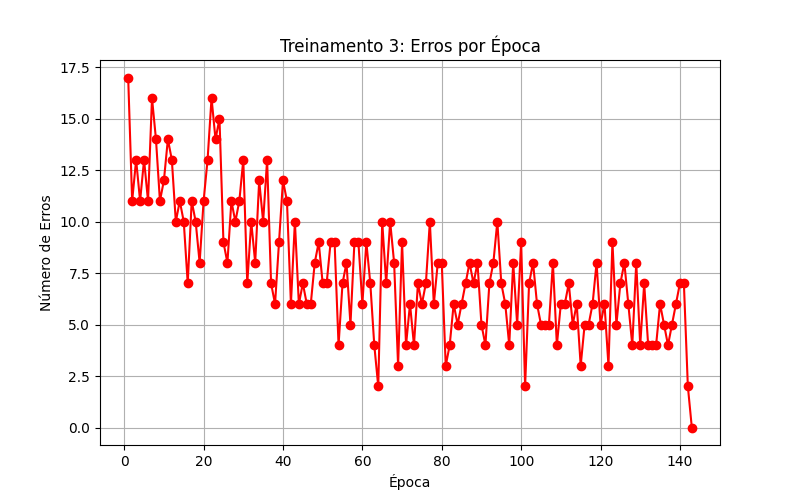
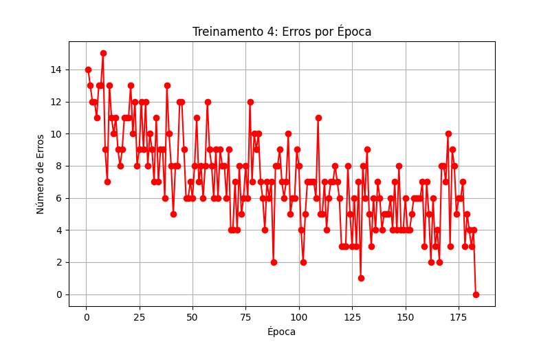
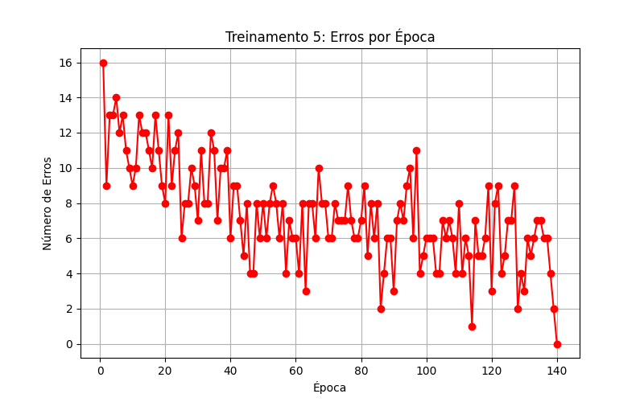

| Treinamento | Vetor de Pesos Inicial | Vetor de Pesos Final | Épocas | ||||||
|---|---|---|---|---|---|---|---|---|---|
| w0 | w1 | w2 | w3 | w0 | w1 | w2 | w3 | ||
| 1º (T1) | 0.5921 | 0.9752 | 0.9820 | 0.3404 | -1.1479 | 0.8956 | 1.9303 | -0.3632 | 109 |
| 2º (T2) | 0.5509 | 0.2460 | 0.6186 | 0.9888 | -1.3691 | 1.0018 | 2.0644 | -0.4066 | 147 |
| 3º (T3) | 0.5593 | 0.2923 | 0.4579 | 0.9296 | -1.2807 | 1.0032 | 1.9866 | -0.3928 | 143 |
| 4º (T4) | 0.9944 | 0.1189 | 0.7036 | 0.2335 | -1.5656 | 1.0910 | 2.2375 | -0.4545 | 183 |
| 5º (T5) | 0.4437 | 0.4842 | 0.3292 | 0.0864 | -1.3763 | 0.9977 | 2.1128 | -0.4122 | 140 |





| Amostra | x1 | x2 | x3 | y (T1) | y (T2) | y (T3) | y (T4) | y (T5) |
|---|---|---|---|---|---|---|---|---|
| 1 | -0.3565 | 0.0620 | 5.9891 | -1 | -1 | -1 | -1 | -1 |
| 2 | -0.7842 | 1.1267 | 5.5912 | 1 | 1 | 1 | 1 | 1 |
| 3 | 0.3012 | 0.5611 | 5.8234 | 1 | 1 | 1 | 1 | 1 |
| 4 | 0.7757 | 1.0648 | 8.0677 | 1 | 1 | 1 | 1 | 1 |
| 5 | 0.1570 | 0.8028 | 6.3040 | 1 | 1 | 1 | 1 | 1 |
| 6 | -0.7014 | 1.0316 | 3.6005 | 1 | 1 | 1 | 1 | 1 |
| 7 | 0.3748 | 0.1536 | 6.1537 | -1 | -1 | -1 | -1 | -1 |
| 8 | -0.6920 | 0.9404 | 4.4058 | 1 | 1 | 1 | 1 | 1 |
| 9 | -1.3970 | 0.7141 | 4.9263 | -1 | -1 | -1 | -1 | -1 |
| 10 | -1.8842 | -0.2805 | 1.2548 | -1 | -1 | -1 | -1 | -1 |
O número de épocas varia porque o vetor de pesos inicial é definido aleatoriamente em cada execução. Como o algoritmo de treinamento (Regra de Hebb Supervisionada) parte de um ponto aleatório no espaço de pesos, a distância e a trajetória necessárias para alcançar uma superfície de decisão que separe perfeitamente as classes mudam a cada vez. Algumas inicializações podem estar "mais próximas" de uma solução válida do que outras, resultando em convergência mais rápida ou mais lenta.
A principal limitação do Perceptron de camada única é que ele só consegue resolver problemas que são linearmente separáveis. Ou seja, ele só pode classificar padrões que podem ser divididos por um hiperplano (uma linha em 2D, um plano em 3D). Se as classes estiverem sobrepostas ou se a fronteira de decisão for não-linear (como no problema do OU-Exclusivo - XOR), o Perceptron nunca convergirá para erro zero.